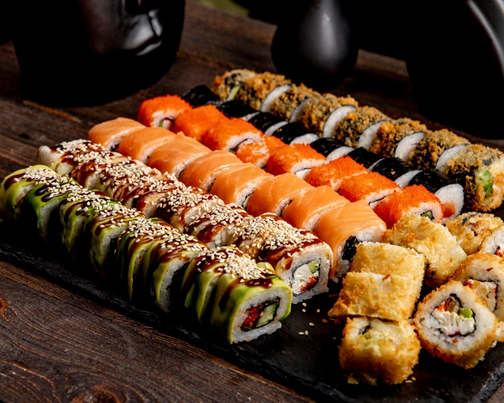

Salmon Sushi

Description
A delectable favourite from the east, features rice and raw fish wrapped in seaweed
Ingredients
- rice
- salmon
- seaweed
- rice vinegar
- water
- soy sauce
- avacado (optional)
Steps
- Place the seaweed on a bamboo mat, then cover the sheet of seaweed with an even layer of prepared sushi rice. Smooth gently with the rice paddle.
- Layer salmon, avacado (optional) on the rice, and roll it up tightly. Slice with a sharp knife and enjoy with soy sauce.